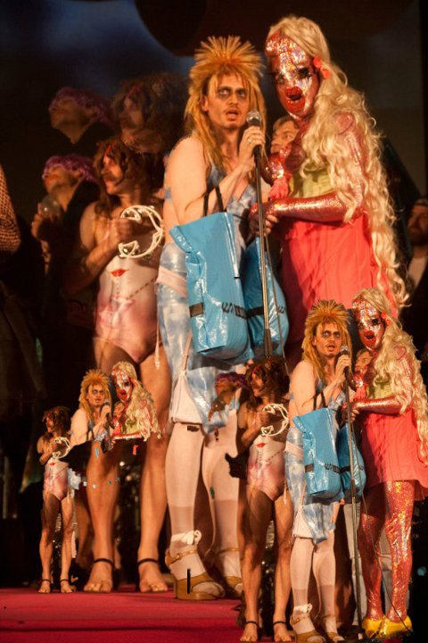
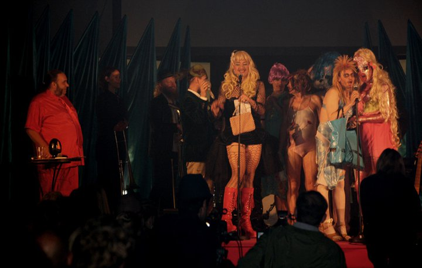

dunst overrækker en af Heinrich Priserne til Sabah. Den Grå Hal, Christiania, København
23/09 - 2010.

Dennis Agerblad & Hairwerk sang en sang.
Sabaah is a group of young homosexual, bisexual and transsexual people with ethnic backgrounds other than Danish.

Vært: Master Fatman, dunst: Antoni, Ramona Macho, Liebling Siebling, Søde CAR O'lina, Vibeke, Dennis Agerblad, Hairwerk.